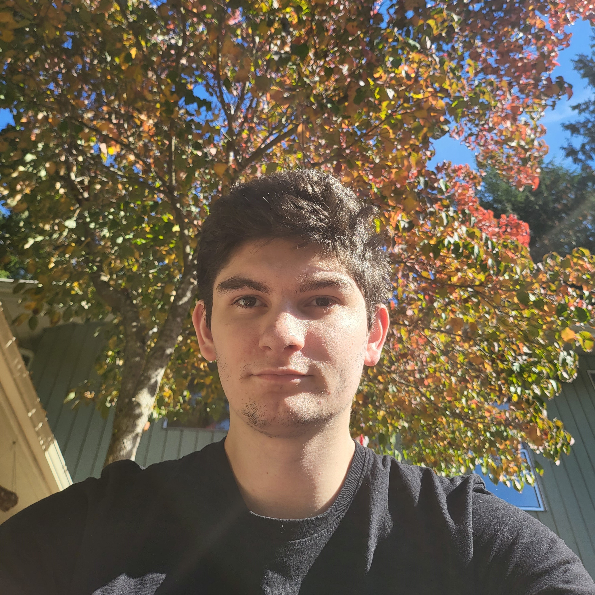

Experienced Lab Tech and Aspiring Systems Administrator. Seeking an opportunity to build upon my current skills while making impactful improvements to sustainability and the environment. Linux daily driver since 2018.
Currently, I am solidifying my real-world skills by deploying various services through my homelab, developing my a simple web browser called Quamium, and restoring vintage electronics.
